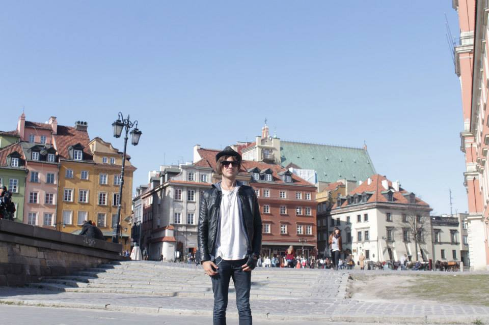

Warsaw
What to See
Warsaw offers a mix of modern and historical sights. Key places include the Old Town Market Square, Royal Castle, Łazienki Park, and the Warsaw Uprising Museum.
A Brief History of the City
Warsaw, the capital of Poland, has a history marked by resilience. It was almost entirely destroyed during World War II but was meticulously rebuilt, preserving its historical architecture while embracing modernity.
Top 10 Attractions
- Old Town Market Square
- Royal Castle
- Łazienki Park
- Warsaw Uprising Museum
- Palace of Culture and Science
- Wilanów Palace
- POLIN Museum of the History of Polish Jews
- Warsaw Zoo
- Nowy Świat Street
- Fryderyk Chopin Museum
What to Bring
- Comfortable walking shoes
- Weather-appropriate clothing
- Travel adapter (Type E socket)
- Camera or smartphone for photos
- Guidebook or map
- Basic Polish phrases
- Reusable water bottle
- Umbrella or raincoat
- Personal medications
- Portable charger
Currency
The currency in Warsaw is the Polish Złoty (PLN).
Best Time to Visit
Spring (April to June) and Autumn (September to October) offer pleasant weather and fewer tourists. Summer is also popular but can be crowded.
Fun Facts
- Warsaw is home to one of the largest green spaces in Europe, Łazienki Park.
- The Warsaw Uprising Museum commemorates the 1944 uprising against Nazi occupation.
- Warsaw's Old Town was rebuilt from scratch after World War II, earning it a UNESCO World Heritage status.
- The city hosts the annual Chopin Piano Competition, honoring the famous composer.
- Warsaw has a vibrant nightlife with numerous bars, clubs, and live music venues.